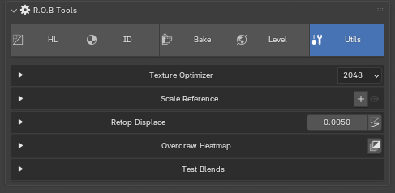
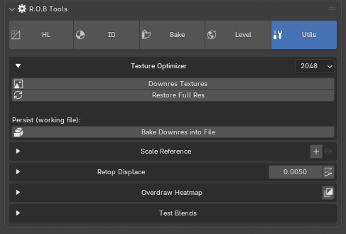
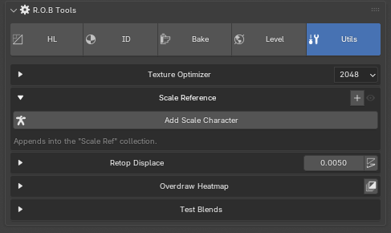
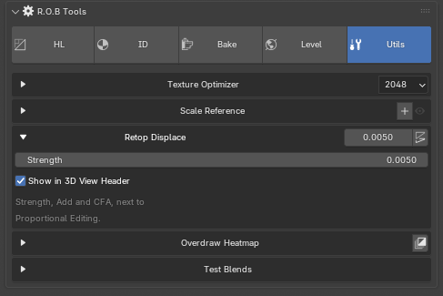
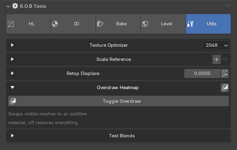
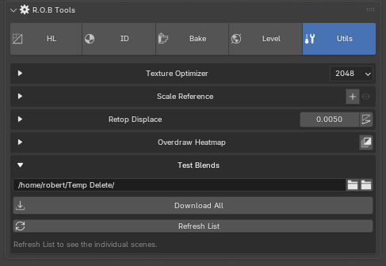

R.O.B Tools¶
Five small utilities that don't belong to any one stage of the pipeline: make the viewport fast again, check a model's scale, get a clean retopology surface, find overdraw, and pull down the test scenes.
Sidebar (N) → R.O.B Tools tab → Utils.

Texture Optimizer¶

A scene full of 4K textures is slow to work in long before it is slow to render. This caps every loaded image at the size in the header — 2048 by default — so the viewport keeps up.
Downres Textures resamples all loaded images down to the cap in memory only. Files on disk are untouched, and unpacked textures come back full resolution the next time the project is opened.
Restore Full Res reloads every image from its source file. It unpacks first, so it also undoes a baked downres.
Bake Downres into File scales to the cap and then packs the small
versions into the .blend, so they survive a save and reopen. Original files
on disk are still not modified, but the .blend now carries small textures —
so use it on a working file, not on the one you deliver. It asks for
confirmation before it packs.
Note
UDIM images report as tiled and are skipped by all three.
Scale Reference¶

Add Scale Character appends a human figure into a Scale Ref collection, so you can see whether the thing you are modelling is the size you think it is.
The section header carries a + (Add Scale Character) and an eye, so both work with the section closed. The eye shows and hides the Scale Ref collection, so the figure can be got out of the way mid-model. It is greyed until there is a collection to hide, and a hidden reference stays in the file.
The figure comes from a .blend named in the add-on preferences. If the path
is unset or wrong the button reports it rather than failing quietly.
Retop Displace¶

Adds a Displace modifier at a small strength to the active mesh, pushing the retopology surface just off the high-poly so it does not z-fight while you work. The strength field and the add button are on the section header, so both work with the section closed, and the modifier is set to show in Edit Mode and on the cage.
The same field and button also sit in the 3D View header, next to Proportional Editing, which is where you want them while actually retopping. Untick Show in 3D View Header (inside the section, or in the add-on preferences) to keep the header clear; the setting is remembered across files and reinstalls.
CFA rides alongside them there, in Edit Mode only — Blender's own Correct Face Attributes, normally a click and a hunt inside the Options popover, and retopping over a baked mesh is exactly when you want it on. Abbreviated because the full name ate a third of the header; hover it for Blender's own name and description. It corrects UVs while a transform runs, so Object Mode does not draw it — a dead control in a header is worse than none.
Overdraw Heatmap¶

Toggle Overdraw swaps every visible mesh to an additive material, so overlapping geometry reads brighter and you can see where a model is stacking faces on top of itself. The toggle is also on the section header, so it works with the section closed; it shows pressed in, with ON, while the heatmap is active.
Toggling off restores your materials, viewport shading and compositor. It is a view state, not an edit — nothing about the meshes changes.
Seams from UV Shells¶
In the UV Editor, sidebar (N) → R.O.B Tools tab, in Edit Mode.
Seams from UV Shells marks a seam on every edge where the UV shells split — wherever an edge's two faces put it in different places in UV space — reading the UV map shown in the UV Editor.
- The whole mesh, selected faces or not, and every object in Edit Mode at once. Blender's own Seams from Islands only looks at the faces the UV Editor is showing.
- Clear Other Seams (on by default, in Adjust Last Operation) takes seams off edges that are not shell borders, so the seams match the shells exactly and a re-unwrap cuts in the same places. Untick it to only add.
- Open borders are left alone: they are already cuts.
Test Blends¶

The example scenes, downloaded on demand from the rob-test-blends releases. Useful for trying the suite on a real asset before committing your own.
The folder comes first. The top row is where the scenes are saved, and it is red until you set it — nothing can be downloaded without it. Once set, the folder button beside it opens the location.
Refresh List fetches the index. Each scene shows its size and its state: not downloaded, downloaded, or a newer version available. Select one to read its description and get Open Blend.
Download at the bottom is always present and says what it will fetch and how much. While a download runs, the section shows a progress bar and a Cancel button — if the server sends no length, the byte count is shown instead of a bar that could not move.
Tip
These are full scenes with textures packed, and they open standalone. The UDIM ones are the quickest way to see how the Baker's UDIM path behaves without building a UDIM asset yourself.